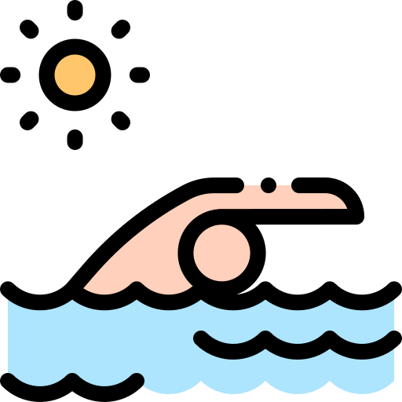
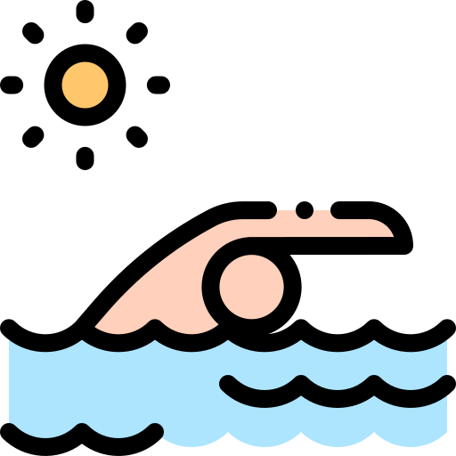

Yuliya Samsonova (Самсонова Юлия)
Phone: +375 (29) 173-99-91
Email: yuliyasamsonova01@gmail.com
Linkedin: yuliyasamsonova
Github: yuliyasamsonova
Full Stack developer with ~2 years of experience. Team player with good communication and organizational skills. Good knowledge of English and great sense of humor. Quickly adapt to new environments, technologies and challenges at work place.
Experience ~2 years (Godel Technologies)
Project (september 2019 - till now): E-Commerce project in electronic components domain.
Participation: Worked on the implementation of new features, integration with microservices, bug fixing, unit testing, ui testing, manual testing. Followed the agile software development process.
Tools and technologies:React Js/typescript/PropTypes, graphql, nodeJs, next js, unit test(jest), ui testing(testcafe, cypress), styled components, git, browserstack, docker.
Project (june 2019 - august 2019): Automation of the system for choosing the best employee of the month. Includes nominating, shortlisting and voting.
Participation: Infrastructure setup. Worked on the implementation of new features, bug fixing, tests. Followed the agile software development process.
Tools and technologies: JS, Vue.js, nodeJs, Express.js, Sequelize, postgreSQL, docker, eslint, unit test(mocha-chai-sinon).
Education
University/College
2009-2013, Minsk Radioengineering College (information technology software, technician programmer)
2013-2018, BSUIR (E-marketing, marketing specialist/programmer)
Courses
2019, JS, RSschool
2013-2014, site administrator, content manager, Bitrix Framework developer 1c-Bitrix (online course)
2014, С programming, Belhard
2011, PHP programming, Shipalex
Languages
English (B1+) - (streamline, skyeng till now)
Italian (A2) - (streamline)
Self-study (JS, HTML, Css, React)
developer.mozilla.orglearn.javascript.ru
codecademy.com
medium.com
About myself
Interests
 Programming,
Sports,
Programming,
Sports,
 Travel,
Travel,
 Languages
Languages
Characteristic
Learnability, Responsibility, Multitasking, Punctuality.